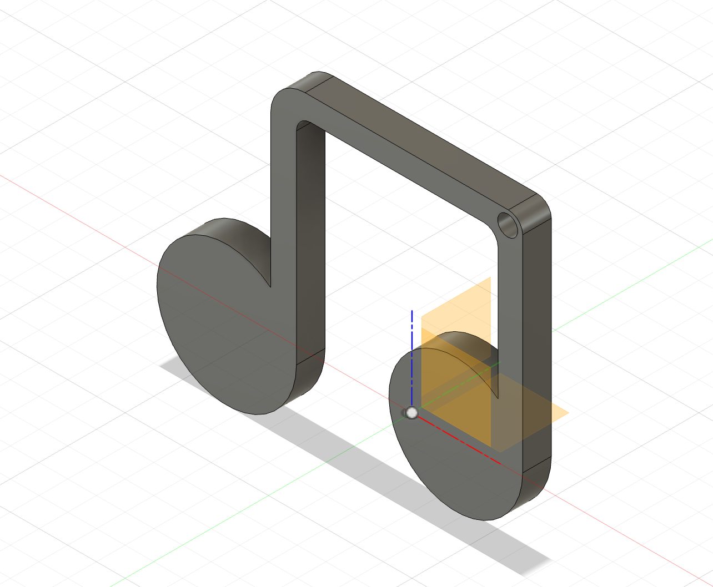

I had to think about what would best describe myself and I thought of music. Music speaks to my soul and it motivates me throughout my day. I love listening to music and I always listen to music while doing everything. My love for music grows with me as I get older as I find it an escape from reality. My peers also can relate with me and we sometimes compare each other's playlists. Therefore, I decided to 3D print a music note and designing it on Fusion was simple and fast to get done. I designed two small circles apart from eachother and added a bar on top of each circle and then a bar connecting those two bars.
